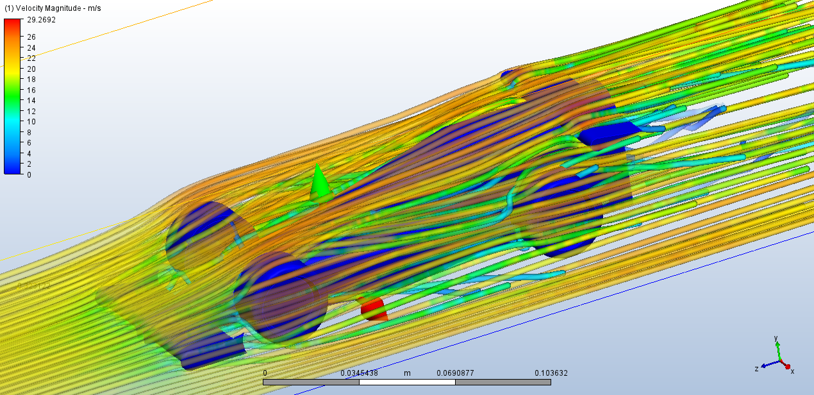

ANÁLISIS CFD
Optimización del Flujo de Aire GR-V1
CFD DATALOG
>> Mapeo completo de 131 superficies analizadas
Status de Simulación
● CONVERGENCIA ALCANZADA
Resistencia Total (Drag)
0.0071N
Suma vectorial de FX en todos los IDs.
Carga Vertical (FY)
-0.1152N
Fuerza descendente en superficie principal.
Desviación Lateral (FZ)
-0.0488N
Balance de flujo en el eje Z.
Área de Superficie
39.85cm²
Área total acumulada (131 IDs).
Centro de Presión
Eje X:
0.0312 m
Eje Y:
0.0001 m
Eje Z:
0.0001 m
Este punto indica dónde se concentra la fuerza del aire. Un centro de presión cercano al centro de masa garantiza estabilidad en la pista.
Top Superficies de Impacto
| ID | Área (m²) | FX (Drag) | FY (Downforce) |
|---|---|---|---|
| 131 | 0.003227 | -0.00077 | -0.11521 |
| 3 | 0.000312 | 0.00628 | 0.00002 |
| 2 | 0.000312 | 0.00090 | 0.00004 |
0.00N
-0.05N
-0.115N
Iteración 1
Convergencia Final (B131)
TÚNEL DE VIENTO VIRTUAL
